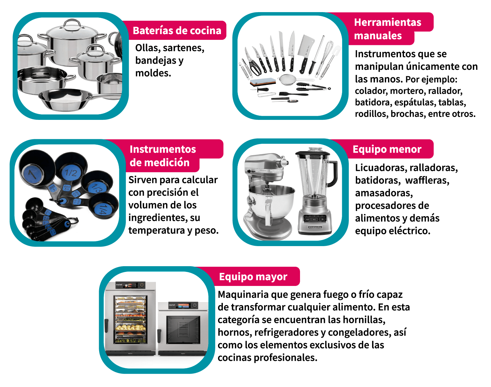

Definir repostería es también un arte, uno basado en preparar y adornar diferentes platos dulces, ambas variables reciben el mismo nivel de importancia, tanto la experiencia que ofrecen los sabores y el impacto visual del postre.
Y aunque el tipos de postre que pueda parecer más sencillo, tiene un tiempo de preparación de hasta 2 horas, que también lo podemos encontrar dentro de la categoría de repostería básica; encontramos otros cuyo tiempo de preparación es igual a muchas y muchas horas de trabajo; lo que llamaríamos la repostería avanzada.
Este tipo de repostería es muy solicitado ya que con él se pueden celebrar fechas especiales como aniversarios de bodas, fiestas y reuniones de cumpleaños, además, ¿un cumpleaños sin pastel es realmente un cumpleaños?
Pero el mundo de los sabores de pasteles no se detiene allí, no solo son pasteles aquellos que acompañan una fecha especial, existe una diversidad increíble de pasteles en el mundo, es por eso que te hemos traído una colección rápida de los 3 tipos de pasteles más apetecidos.
Este tipo de pastel suele ser más sencillo que los anteriores y no necesariamente debes tener un conocimiento técnico para animarte a prepararla puesto que se realiza con moldes de figuras como flores, estrellas o cualquier personaje de caricaturas. El principal nutriente de la gelatina es el azúcar, por lo tanto debes observar su nivel contenido de azúcar para que no caigas en excesos, aunque también puedes encontrar gelatinas dietéticas.
De los tipos de pasteles cuya preparación es más sencilla, puedes agregarle algunas frutas y adornarlo a tu gusto para mejorar su impacto visual. Cada uno de los tipos de flanes y sus nombres constan de un ingrediente fundamental, sin embargo los ingredientes que no debes olvidar a la hora de preparar tus flanes son los huevos, leche y el azúcar.
La higiene en la cocina es un aspecto fundamental a revisar en un curso de repostería, incluso uno básico, por ello, al concluirlo, podrás comprender las conductas básicas de limpieza que se deben adquirir en el ámbito profesional con el fin de garantizar mejores resultados a la hora de cocinar.
Entre las medidas de higiene más esenciales se encuentran:
De igual manera, es muy importante conocer las técnicas para descongelar, almacenar y calentar todo tipo de alimentos con el propósito de erradicar cualquier riesgo sanitario, así como evitar pérdidas monetarias. Para desenvolverte como un profesional, también es muy importante cuidar del equipo y maquinaria, por lo cual es necesario que sepas utilizar cada uno de los instrumentos de trabajo para facilitar las diferentes tareas en la cocina. Una de las herramientas básicas en repostería son los cuchillos, cuyo manejo y cuidado debes aprender; sin embargo, conforme avances en tu curso, notarás que existe una diversidad de instrumentos manuales, eléctricos, tradicionales o contemporáneos que te servirán para aplicar diversas técnicas, entre los que se encuentran:
La combinación de orden, limpieza y conocimiento de las herramientas de trabajo permitirá que prepares los alimentos de manera sencilla, eficaz y segura.

La harina es uno de los ingredientes más importantes en la panadería y pastelería, ya que son básicamente los ladrillos de la construcción que dan estructura a una diversidad de recetas como galletas, pasteles, panes y otros productos.
Por lo tanto, es fundamental que conozcas los diferentes tipos y componentes, pues sólo de esta manera obtendrás los resultados que buscas de cada receta, como un color, sabor o nutrientes específicos.
Las harinas se pueden clasificar por:
Por otra parte, las levaduras y agentes leudantes son los ingredientes naturales o químicos que ayudan a obtener masas de gran calidad y a agregar características específicas como aroma, textura, volumen y migajón. Como ejemplo, podrás notar que la consistencia y el sabor de un bizcocho no es igual a la de un pastel.
Cuando la levadura entra en contacto con la masa, el pan comienza a fermentar, es por eso que si se utiliza menos levadura se debe realizar el proceso durante más tiempo.
La fermentación se da cuando la levadura comienza a consumir los azúcares (glúcidos) que contiene la harina de forma natural, lo que produce la formación de dióxido de carbono (gas CO2) y alcohol.
Durante el amasado el dióxido de carbono queda atrapado en la red de gluten, debido a esto, la masa se hincha y adquiere volumen. Por otra parte, el alcohol proporciona sabor y aroma al pan. Ésta es la importancia de la levadura y del amasado, ya que sin este procedimiento sería imposible la formación tanto del migajón como de una corteza crujiente.
Existen tres principales tipos de levadura:
Las frutas son ingredientes increíbles con los que se puede crear una gran variedad de preparaciones, tanto dulces como agridulces. Además de brindar sabor y colores a nuestros platillos, también ayudan a que éstos luzcan más deliciosos y frescos.
Las frutas se pueden clasificar en:
Otra forma de dividir las frutas es de acuerdo a sus características morfológicas. Con base en esto, se pueden clasifican como:
Una vez que comprendas la variedad, selección, manejo y conservación de las frutas, también conocerás las diferentes maneras de cortarlas y pelarlas. Entre los tipos de cortes más conocidos se encuentran: